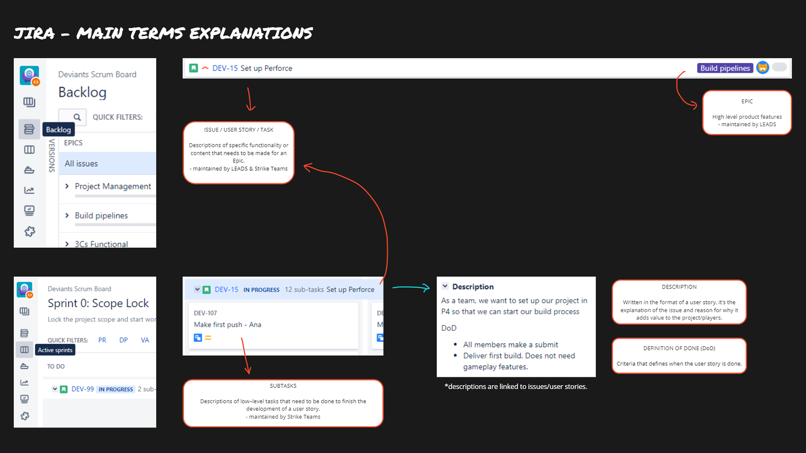

Ruckus & Rascal
Co-Op Adventure
In this chaotic co-op adventure, you play as 2 mischievous raccoons
and take out the head chef of the Deviant's diner.
 12 People
12 People
 7 Weeks
7 Weeks
 Producer
Producer
 Unreal Engine
itch.io
Unreal Engine
itch.io
MY CONTRIBUTIONS


I played an important role in setting up and monitoring our Jira
and Kanban boards, ensuring efficient project management. This
involved creating task and bug report templates to help my team
start out. I organized the main game features into Epics,
providing a structured overview of our project's major
components. While monitoring tasks, sub-tasks, and bug reports,
I kept an eye on the project's progress and issue resolution.
Additionally, I took charge of creating and managing sprints,
ensuring a well-organized workflow for our team.
I created the Risk Log during the first week of taking over the
producer role. I then updated it on a bi-weekly basis, keeping
track of what risks have occurred and of new ones that appeared
throughout the project.
As a producer, I played a key role in establishing essential
pipelines and documents to optimize the team's workflow. This
included implementing a playtesting pipeline for efficient
testing, a bug report pipeline for streamlined issue tracking,
and customized Jira pipelines for improving our workflow.
Additionally, I provided the team with clear project goals
through a Minimal & Target Scope Overview, and a detailed
Scope Breakdown for better understanding and alignment among
team members.

Jira Explanations
In my role, I hosted various Scrum rituals, including Daily
Standups, Sprint Reviews, Retrospectives, Build Reviews, and
Sprint Planning. Taking charge of the Scrum Board, I ensured
tickets get updated daily. Regularly analyzing Burndown Charts,
I adapted our plan to enhance team efficiency and progress for
upcoming sprints, which increased by an average of 20%.
Identifying and removing obstacles was a key responsibility,
involving the use of risk logs for mitigation planning and
collaboration with discipline leads to address any issues.
Additionally, I ensured discipline leads maintained, updated,
and prioritized the backlog, crucial for effective sprint
planning and overall project success.
I created bi-weekly progress presentations that showcased the
game build, team objectives, priorities, roadmaps, and relevant
updates. These presentations were delivered to stakeholders, and
the feedback received guided our actions and improvements for
the following presentations.
This involved setting up and managing some of our social media
accounts, printing stickers, and bringing snacks for the events
we participated in. Additionally, I took charge of creating and
updating our itch.io page. Recognizing the importance of direct
interaction, I actively participated in various game events such
as Night of the Nerds, Play Day & Industry Showcase Day @
BUas. To keep our audience informed about the development
journey and upcoming features, I regularly posted devlogs,
fostering a sense of community and anticipation around our game.
 Promotional Assets During Industry & Play Day
Promotional Assets During Industry & Play Day
Promotional Assets During Industry & Play Day
In my role as the producer for our small game project, I did my
best to ensure a productive environment despite facing
challenges that affected our project's original plan. To
overcome the absence of a dedicated level designer, a small
group was formed for creating the main level. Some features,
alongside the original storyline, had to be cut or adjusted to
our new scope, as a result of a shortage of designers. However,
that opened up an opportunity for our programmers to implement
entertaining minigames, which were successful during the
playtesting events we attended. Lastly, I gained valuable
insights into identifying target audiences, creating personas,
compiling competitor and press lists, and conducting effective
playtesting.